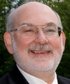
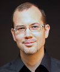
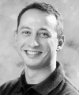
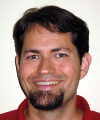
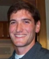
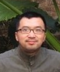
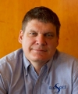
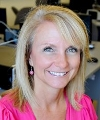
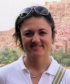
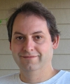

Organizing and Program Committees
The Organizing Committee and the Program Committee members are listed below.
Organizing Committee
| General Chair | Will Tracz | Lockheed Martin | will at tracz dot org |  |
| Program co-Chair | Martin Robillard | McGill University | martin at cs dot mcgill dot ca |  |
| Program co-Chair | Tevfik Bultan | University of California, Santa Barbara | bultan at cs dot ucsb dot edu |  |
| Workshop Chair | Jonathan Aldrich | Carnegie Mellon University | jonathan dot aldrich at cs dot cmu dot edu |  |
| Publicity Chair | William G.J. Halfond | University of Southern California | halfond at usc dot edu |  |
| Proceedings Chair | Yu "David" Liu | State University of New York at Binghamton | davidl at cs dot binghamton dot edu |  |
| Registration Chair | Mike Wing | CritterScape | wing at swcp dot com |  |
| Local Arrangements Chair | Laurie Williams | North Carolina State University | williams at csc dot ncsu dot edu |  |
| Student Volunteer Chair | Emerson Murphy-Hill | North Carolina State University | emerson at csc dot ncsu dot edu |  |
| New Ideas Track Chair | Licia Capra | University College of London | l dot capra at cs dot ucl dot ac dot uk |  |
| Research Demos Chair | Mark Grechanik | Accenture / University of Illinois at Chicago | drmark at uic dot edu |  |
| Webmaster | Greg Cooper | SEN, SIGSOFT | infodir_sigsoft at acm dot org |
Program Committee
| Jo Atlee | University of Waterloo |
| Luciano Baresi | Politecnico di Milano |
| Antonia Bertolino | ISTI-CNR |
| Christian Bird | Microsoft Research |
| Margaret Burnett | Oregon State University |
| Marsha Chechik | University of Toronto |
| Jane Cleland-Huang | DePaul University |
| Ivica Crnkovic | Mälardalen University |
| Robert DeLine | Microsoft Research, USA |
| Arie Van Deursen | Delft University of Technology |
| Danny Dig | University of Illinois at Urbana-Champaign |
| Sebastian Elbaum | University of Nebraska-Lincoln |
| Harald Gall | University of Zurich |
| Paul Grünbacher | Johannes Kepler University Linz |
| Magne Jørgensen | Simula Labs |
| Christine Julien | University of Texas at Austin |
| Natalia Juristo | Universidad Politécnica de Madrid |
| Sarfraz Khurshid | University of Texas at Austin |
| Darko Marinov | University of Illinois at Urbana-Champaign |
| Mira Mezini | Technische Universität Darmstadt |
| Ana Milanova | Rensselaer Polytechnic Institute |
| Alessandro Orso | Georgia Tech |
| Massimiliano Di Penta | University of Sannio |
| Grigore Rosu | University of Illinois at Urbana-Champaign |
| Abhik Roychoudhury | National University of Singapore |
| Koushik Sen | University of California, Berkeley |
| Mary Lou Soffa | University of Virginia |
| Willem Visser | University of Stellenbosch |
| Chao Wang | Virginia Tech |
| Charles Zhang | Hongkong University of Science and Technology |
| Andrea Zisman | City University London |